Воспоминания Архиповой С.И.
| Автор | Архипова С.И. |
| Информация о публикации | Записаны лично Архиповой С.И. |
Заметки
Заметка
Воспоминания
Архиповой (Брик) Сусанны Ильиничны
(1940 – 2018)
-1-
Родные со стороны матери
Прабабушка Андрюс Екатерина Фоминична (в замужестве Минкевич)
Прадед Минкевич Иван Онуфриевич
Бабушка Минкевич Мария Ивановна 1878 г.р. (в замужестве Архипова) – ум. В 1965 г.
Дедушка Архипов Василий Александрович
имел чин коллежского асессора
окончил Гатчинский институт им. Императрицы Марии Фёдоровны
Мать Архипова Зоя Васильевна 1915-1997
Тётя Архипова Тамара Васильевна 1911-1975
Родные со стороны отца
Дедушка Брик Тимофей... Погиб в 1943-м
Отец Брик Илья Тимофеевич 1911-1943 погиб под Смоленском в 1943
Я, Архипова (Брик) Сусанна Ильинична, родилась 3 декабря 1940 г. В г. Ленинграде, ребёнком пережила блокаду.
Детство я провела с бабушкой, мы с ней очень любили друг друга. Вставали мы рано, после завтрака, если так можно назвать кусок хлеба с чаем или кипятком, шли либо в храм, Спасо-
-2-
Пребраженский Собор, либо гулять, летом ездили в Летний сад или в парк Лесотехнической академии, туда ездили на весь день, взяв с собой немного хлеба, 2-3 картофелин варёных, бабушка брала с собой шитьё или вязание.
Она очень хорошо шила и вышивала и вязала.
Бабушка обладала прекрасной памятью, она любила рассказывать мне про жизнь до революции, своё детство.
Особенно я любила слушать её рассказы о том, как она венчалась.
Ещё поездки к её двоюродной сестре, Ро Евгении Михайловне, как мы её называли, тёте Жене.
Они с мужем жили на втором этаже дома, угол 15 линии и наб. Лейтенанта Шмидта .
Дом был старинный с каменным балконом; вся комната была очень уютной с красивыми картинами, старинной посудой, большим кивотом.
У неё всегда были какие-нибудь сладости, или пироги, варенья и вдоволь булки.
Чай пили из очень красивых чашек, где были нарисованы сцены их китайской жизни.
Чашки были прозрачными, чай очень вкусным.
Пока бабушки говорили с тётей Женей, мне, чтобы не было скучно, давали смотреть дореволюционные журналы «Нива». читать не умела, но фотографии были очень красивые.
-3-
Особенно запомнилась фотография свадебной кареты каких-то Великих князей.
Муж Евгении Михайловны, Ро Владимир Артурович, был родом из Крыма.
Его дед, англичанин, был участником севастопольской компании, офицер. Он влюбился в крымчанку и остался в России. У него был большая семья, она из его дочерей была горничной у Айвазовского. Художник был очень ревнивым супругом, он часто запирал её в башне, ключ брал с собой и уходил писать море. Бедную женщину спасала горничная.
Владимир Артурович окончил коммерческое училище, он был очень хорошим бухгалтером (у нас есть его фото времён Первой Мировой войны).
Детей у них не было, они очень любили племянников, любимицей Евгении Михайловны была моя мама – Зоя, она даже брала её с собой в Крым, где-то около 1931 г.
Ещё с бабушкой ездили к её младшей сестре, Лидии Ивановне, она жила в Лесном, около Политехнического института, в деревянном доме, двухэтажном, у них было 3 комнаты на первом этаже.
В одной жила её дочь Валентина, от первого брака. В двух других, маленьких, она жила со старшим сыном.
Окна выходили в палисадник, очень красивый, с георгинами по осени и цветами «золотой шар».
Судьба этой удивительной женщины была очень сложной. В первый раз она вышла замуж в 1913г. За поляка, фамилии его я не помню , он был крупным помещиком.
-4-
Считалось, что Лида сделала «блестящую партию». После свадьбы, она уехала с матерью в Польшу. Однако Война 1914-го опрокинула всё планы, началось немецкое наступление и они бежали в Петроград (в чём были одеты), Лида с новорождённой дочерью, её муж и мать.
Всё было потеряно. После этого, моя прабабушка Екатерина слегла с параличом и, вдобавок, ещё ослепла. В таком состоянии, она прожила 19 (14?) лет. Дочери преданно ухаживали за ней. Как вспоминала моя мама, она была очень весёлой и никогда не унывала.
Виктор в 1925 г уехал в Польшу, он просил отдать ему дочь, но Лида не отдала.
Баба Лида очень любила животных у неё всегда были собаки, первые были 2 овчарки, мать и дочь, они работали сторожами в универмаге ДЛТ (дом Ленинградской торговли).
Потом были эрдельтерьеры, Пума и её дочь Аза, они были очень симпатичные и дружелюбные. Порода эрдельтерьеров, очень отважные собаки, их изобразил французский художник Делакруа в картине «Охота на льва» находится в Эрмитаже
Она дожила до преклонных лет и скончалась в 1976 г. в возрасте 92 лет.
Её дочь Валя, работала лаборантом в Политехническом ин-те, у неё было двое детей, дочь Рая, 1935 и сын Юрий 1945 г., муж умер рано, и они жили очень бедно.
-5-
Юрий потом стал врачом, он был аспирантом педиатрического университета, он занимался на кафедре проф. Давиденковой, жены известного генетика Давиденкова (мемориальная доска его памяти висит в Академии последипломного образования на Кирочной ул.). Его жизнь трагически оборвалась в 1987 г.
Дочь Рая тоже работала в Политехническом институте, образования из-за войны она не получила, вышла замуж, у неё взрослые, теперь, уже пожилые дочери.
После смерти бабы Лиды и моей тёти Тамары, родственные отношения «сошли на нет».
Сын бабы Лиды Юрий, житель блокадного Ленинграда, с четырнадцати лет работал токарем на оборонном заводе, у него был очень красивый голос, он пел в хоре рабочей молодёжи Ленинграда и был на фестивале в Берлине, в 1985 г.
Юрий был рождён от второго брака. Муж бабы Лиды, Балашов Борис Николаевич, был из семьи флотоводцев, его отец был контр-адмирал.
Он был аспирантом математического факультета Университета, в один день, он бросил всё, порвал с семьёй и стал проповедовать Библию, к нему приходили люди, и т.к. годы были голодные, приносили, кто что мог, кто хлеб, кто овощи.
Баба Лида работала на заводе «Светлана», в отделе контроля качества, и проверяла лампочки.
Наконец, напишу о третьей сестре бабушки, Ефросинье.
Она жила в моём доме , у неё была
-6-
маленькая комната, на первом этаже, в коммунальной квартире. Во времена моего детства, она была старушкой, с небольшим тремором головы. Говорят, в молодости она была очень хороша собой.
Синие глаза, каштановые волосы. Бабушка вспоминает, что на балах в Политехническом институте, чтобы пригласить её на мазурку, кавалеры становились в очередь.
Она была помолвлена с атташе Немецкого посольства, Отто (фамилии не знаю, бабушка называла его Отто Карлович). Но грянула 1-я Мировая.
После революции она вышла замуж за инженера Жоржа Паррэна, француз по национальности, он был ведущим инженером на Ижорском заводе, но в 1937 репрессирован, и больше о нём неизвестно.
Итак, в этой части своих воспоминаний я, как могла, написала о своём детстве, об окружающих меня людях. Были, конечно, и родственники со стороны папы, о них я напишу позже.
Я написала о моём детстве до 1948 г. В 1948 г. я пошла в школу №163 Смольнинского района, была зачислена в 1а класс.
Сейчас, когда я смотрю, как собирают в школу детей, в т. ч. и моих внуков, я испытываю разные чувства, всего так много, всё так красиво, наверное так и должно быть, но я пошла в школу лишь спустя 3 года после войны. Да, и тогда была школьная форма, но далеко не у всех. Мне сшили платье из лошадиной попоны, синее
-7-
фартук из старой чёрной кофточки, и ничего, у других и этого не было. Зато был красивый вязаный воротничок, связала бабушка, она вообще вязала очень красивые вещи крючком: салфетки, скатерти.
Хочу заметить, что обучение тогда было раздельным, женские и мужские школы, и только в 7-м классе к нам пришли мальчики. Ценился каждый карандаш, ручки со стальными перьями, название было «586» и «уточка». Но были девочки у которых были и красивые шерстяные платья, и шёлковые фартуки, кожаные портфели. Это были дети военных. Это сословие жило очень зажиточно, можно сказать богато.
Но у половины класса, в том числе и у меня не было отцов, жили бедно, но никому не завидовали.
После окончания первого класса, я уже не ездила с бабушкой в парк Лесотехнической академии, мы стали снимать на лето дачу.
7 лет мы жили в пос. Рощино и 3 года в пос. Шапки.
Я получала за отца пенсию, и это было большим подспорьем для семьи.
-8-
БАБУШКА
Ещё раз хочу подробнее написать о бабушке. Она прожила долгую и нелёгкую жизнь. Как я уже писала, она родилась в 1878 г., была старшая в семье, где было 9 человек детей, до взрослой жизни дожили лишь трое дочерей Мария, Ефросинья, Лидия. Бабушка была незаконнорождённой, она была англичанкой, её отец приехал с семьёй в Россию, вероятно в 50-60-е гг. 19в . Он держал скаковые конюшни с жокеями. Англичане считались одними из лучших наездников. Отец умер, старший брат был игрок, проиграл всё состояние, и прабабушка с младшим братом Томасом остались крова и средств.
Бабушка (прабабушка, см. прим. 9) стала работать белошвейкой, и её брат поступил мальчиком в контору лакокрасочного завода.
Прабабушка была очень хорошенькая и мой прадед Минкевич Иван Онуфриевич соблазнил её. Сколько детей родилось от незаконного сожительства, не знаю. Знаю только, что прабабушка приняла православие и они с прадедом венчались, когда бабушке моей было 13 лет.
Венчались в Измайловском соборе. Бабушка вспоминала «я бегала по собору и всем говорила: смотрите моя мама венчается».
Бабушка училась в гимназии, и конечно её положение было незавидным. Училась она хорошо, но закончилась только 6 классов. Надо было работать, помогать семье.
-9-
Прадед, судя по всему был чиновником в министерстве образования . Не знаю, какой он имел чин, но судя по рассказам бабушки значительный . Одна беда, он был заядлый картёжник, проигрывал иногда, всё жалование, и, если они жили в приличной квартире, то после проигрыша, собирали пожитки, и переезжали куда-нибудь на чердак или в подвал.
Дети болели, в 17 лет умерли Настенька, сестра бабушки, в 16 лет Федя, умерли от чахотки, так тогда называли туберкулёз.
Прадед был старше прабабушки лет на 27-28. Он умер от паралича, в возрасте 65 лет.
Прабабушка стала получать пенсию на детей, а бабушка стала работать. Она работала боной (воспитательницей) в семье архитектора, детей было двое, мальчик 5 лет и девочка 3 лет, она учила их хорошим манерам и основам французского и немецкого языка.
Бабушка была бесприданницей, так в старину называли небогатых девушек, о браке она не думала, и ей было уже 32 года. С дедушкой она познакомилась в сквере Мариинской больницы, что на Литейном проспекте, она навещала двоюродную сестру Евгению , он родную сестру Александру.
Дедушка был помолвлен с богатой наследницей, племянницей купцов Перцовых, но он влюбился в мою бабушку, разорвал помолвку и обвенчался с бабушкой, ей было 32, ему 22.
Венчались они в церкви, в Лесном , она уцелела до сих пор.
-10-
Дедушку воспитывала сестра Мария, она была вдовой генерала, жила в квартире, которая занимала первый этаж, с братом Василием и тремя сёстрами. Они были очень довольны, что брат помолвлен с молодой богатой девушкой. И вдруг скандал, брат в один день рвёт помолвку и заявляет, что женится на бесприданнице, да вдобавок, старой деве.
На венчание они приехали, но как вспоминала бабушка, стояли в стороне, неодобрительно «шушукаясь».
Они наняли «кликуш», которые ходили по церкви и жалобно причитали: «такой молоденький, красивый, а женится на уродине, без гроша в кармане».
Хотя небольшое приданое бабушке «справили», этим занялась жена дяди Томаса .
Её звали Анна, она была русская, у них с дядей Томасом было двое детей. Кстати, поступив на лакокрасочный завод конторским мальчиком, он в последствии стал управляющим, и после революции «красным директором», так называли после революции специалистов, которые согласились сотрудничать с советской властью.
В начале 1925 г., они уехали в Англию.
Так вот, тётя Анна? и «справила» приданое для бабушки: постельное бельё, одеяла, подушки, посуда, платья подвенечное и для визитов (бабушка говорила, что оно было очень красивое, фисташкового цвета).
После свадьбы, молодые снимали дом в Стрельне , белый двухэтажный.
-11-
В этом доме, в 1911 г., в мае месяце родилась их старшая дочь Тамара.
Бабушка нервничала почти всю беременность, поэтому тётя родилась нервной.
Бабушка однажды рассказала такую историю, вскоре, после свадьбы, посыльный доставил ей посылку. Бабушка распаковала упаковку, в ней лежала красивая атласная подушка, (атлас – белый или цветной блестящий шёлк) белого цвета, с красивым бантом. Бабушка открыла коробку, в ней лежал небольшой гроб с крестом «Пожелания» дедушкиных сестёр.
Шло время, сёстры поняли, что семья крепкая и смирились.
Впоследствии они стали друзьями.
Я могу много писать о бабушке, во время 1-й Мировой, дедушка был откомандирован в Финляндию, характер его миссии мне не известен.
В Гельсингфорсе, так тогда называлась столица Финляндии, Хельсинки, у бабушки была горничная, финка, её звали Эстри, и кухарка ???? (неразб.).
После революции, всё пришлось делать самой, и бабушка всему научилась, она была хорошая хозяйка, экономная и расчётливая.
Я потом ещё расскажу или напишу о бабушке.
А пока, эти страницы, которые написаны во время моего пребывания у дочери, зятя, внуков, заканчиваются.
Это было одно из лучших воспоминаний в моей жизни.
Август 1913г. (2013)
Альбом
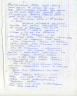
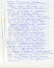
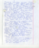
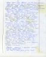
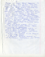
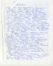
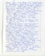
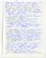
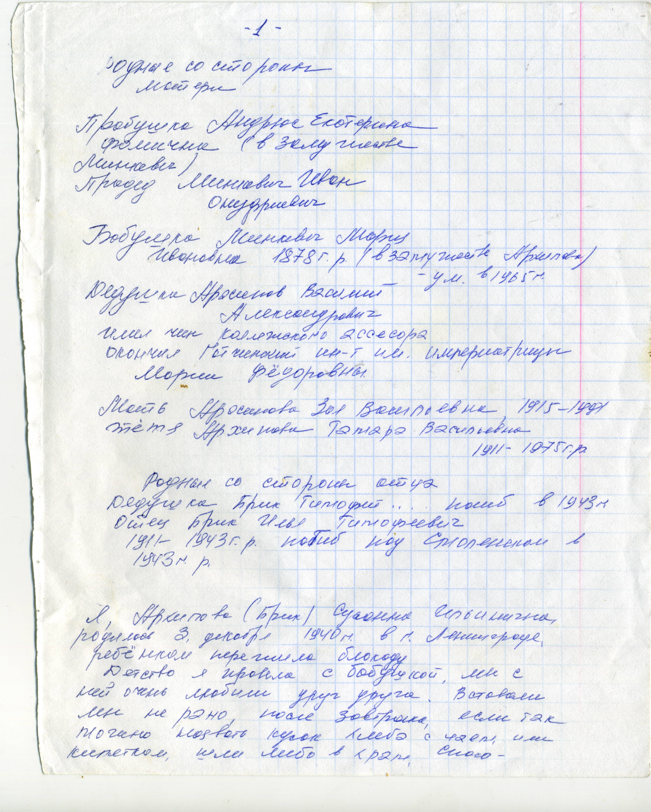
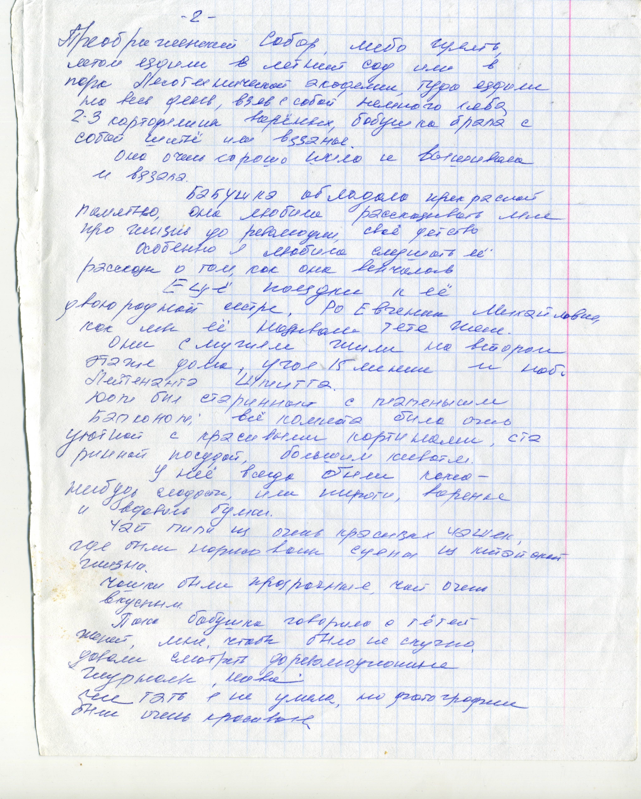
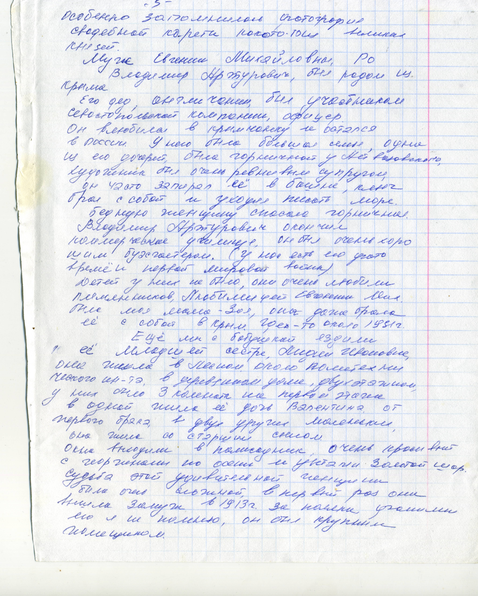
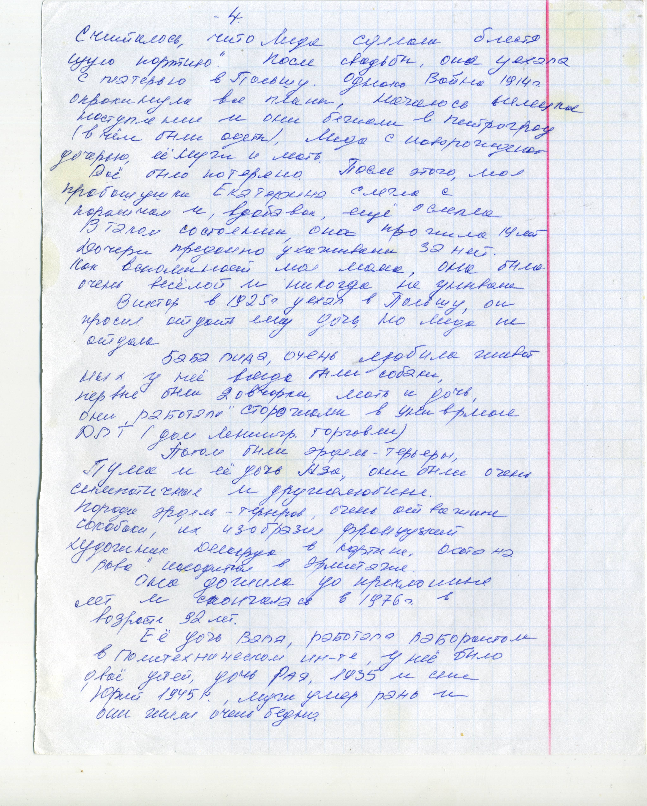
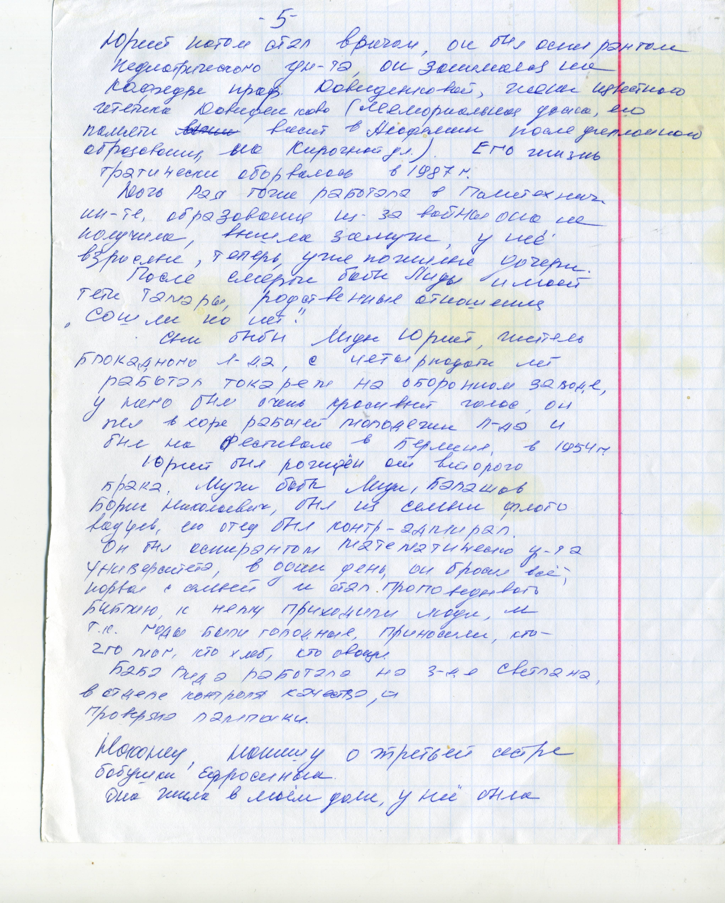
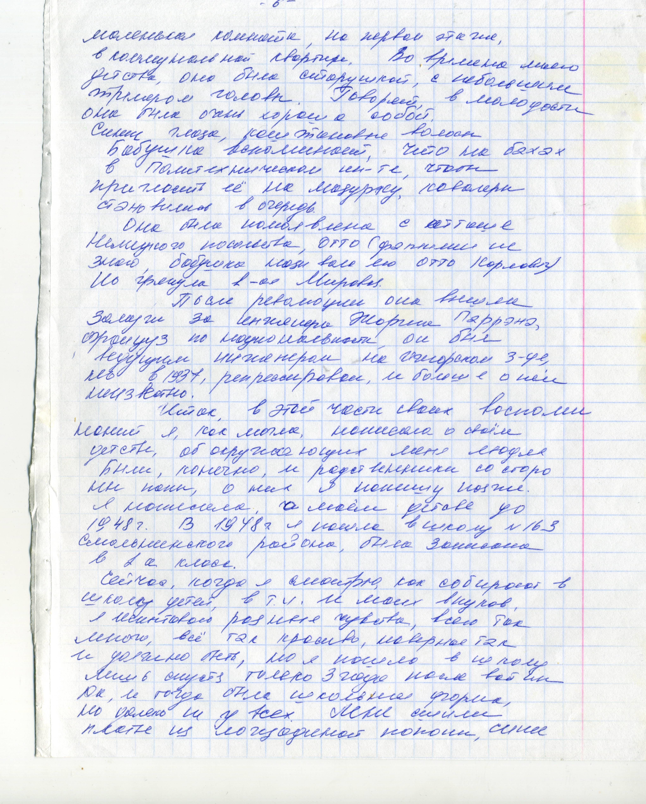
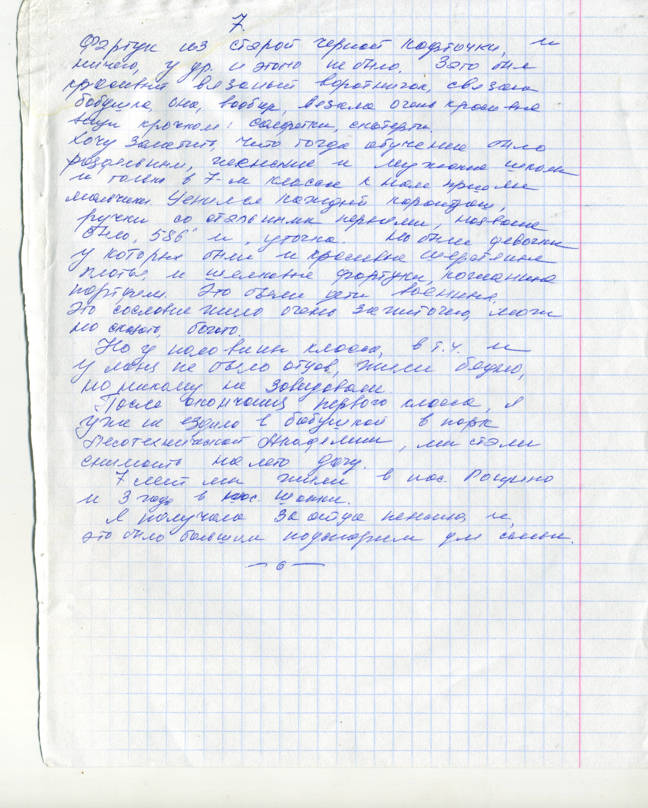
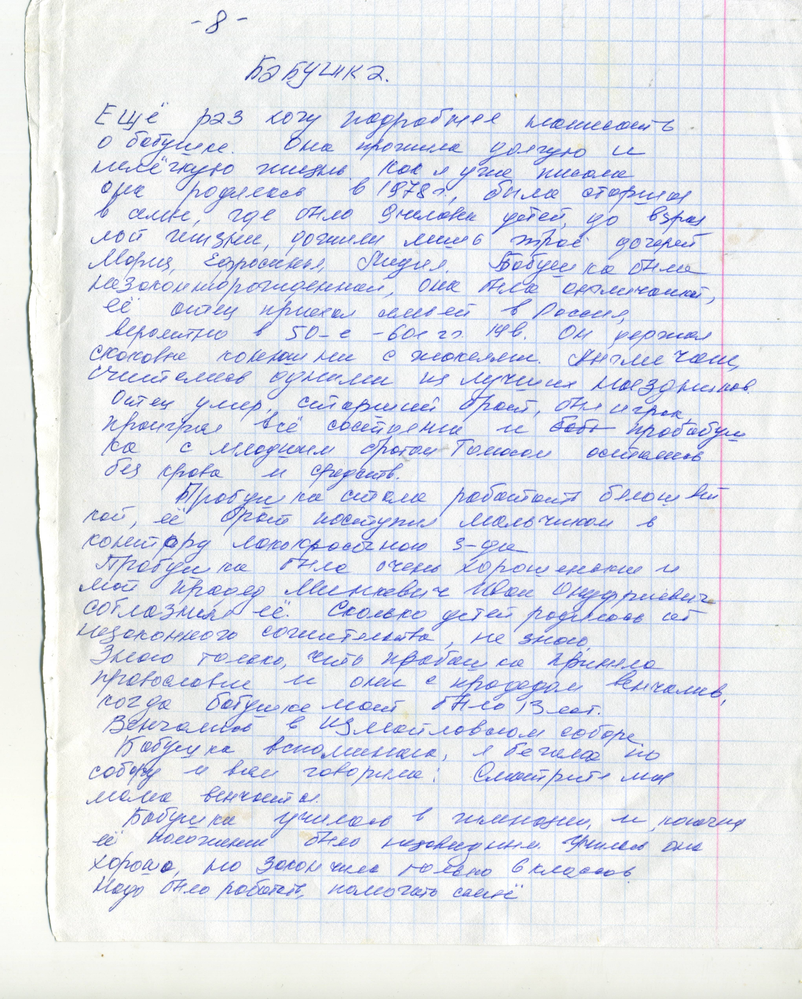
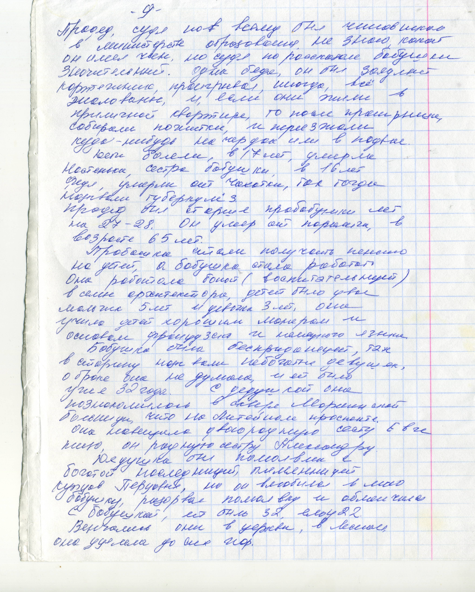
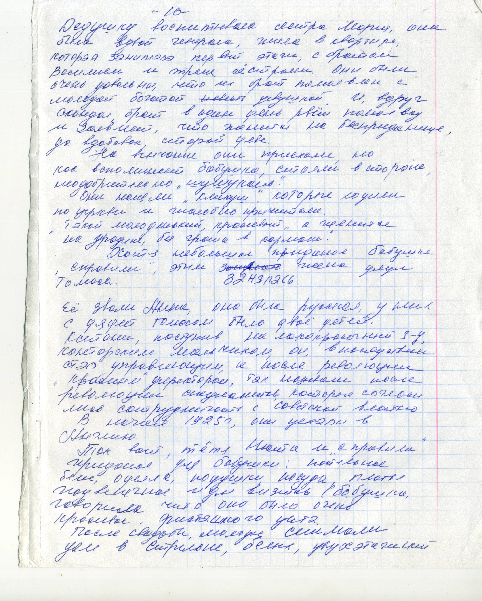
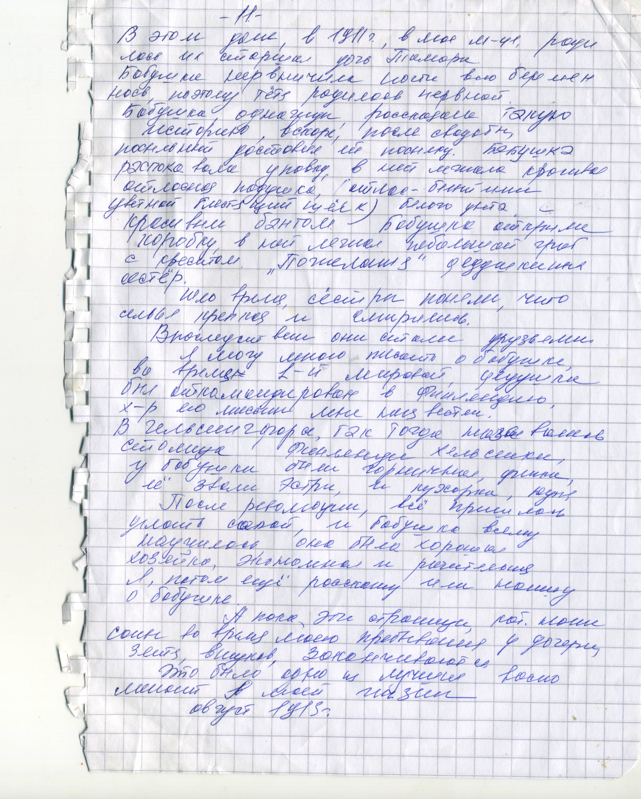
Хранилища
| Номер | Название | Тип | Номер |
|---|---|---|---|
| 1 | Домашний Архив | Книга |
Ссылки
- с.6
- с.3
- с.5
- с.1